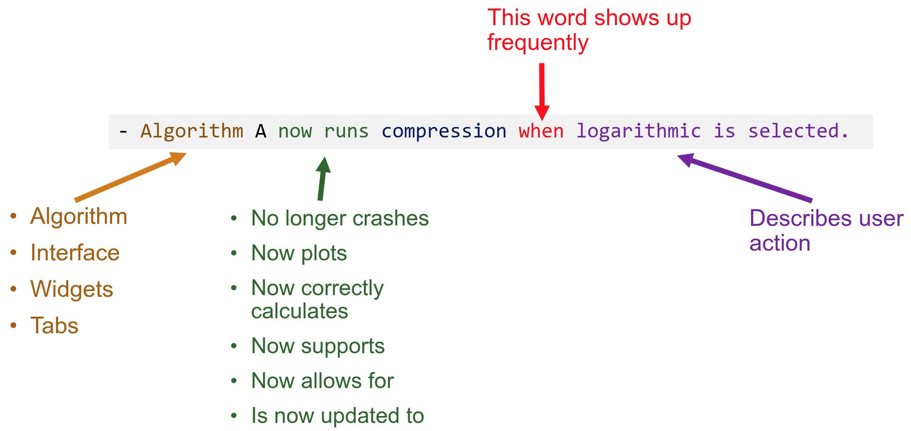
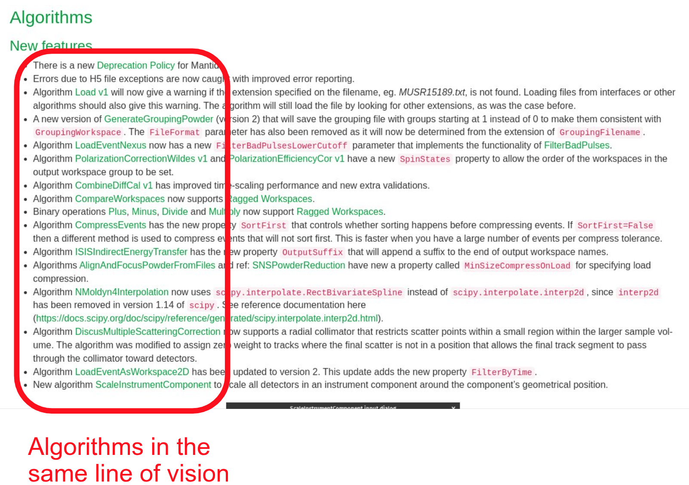

Release Notes Guide#
This page gives an overview of the release note process for Mantid.
Like all documentation, release notes are written in reStructuredText and processed using Sphinx along with Sphinx bootstrap theme and custom css. For the basics of how to format your release notes please see the Documentation Guide For Devs .
When to add release notes#
Release notes are an important part of communicating with users about the new features and bugfixes in the next release of Mantid. This means that any piece of work that impacts on user experience or that has been requested by users will normally require a release note. Examples of the type of work normally requiring notes:-
New GUIs, algorithms, buttons, menus, documentation etc.
Work that will require users to change their workflow
Under the hood work that will make a noticeable difference to users e.g. improving loading speed
Updating user documentation
Making changes at the request of users
The following are examples of when release notes are not required:-
refactoring code in a way that does not alter the user experience
fixing compiler warnings
adding unit or system tests
updating developer documentation
If in doubt check with your team lead/manager for guidance.
How to add a release note#
Creating a file with the release note#
To add a new release note on your PR, you need to create a new .rst file and give it the name it in one of the following ways:
- Using the Pull Request (PR) number (preferred method)
- Using the Issue number (to be used if multiple PRs stem from the same issue)
A good way to memorise why the PR number is preferred over issue number the is to think about which number is closer to your changes: The PR number directly identifies your work, whilst the issue number is more indirect (someone looking for your changes will need to scavenge issue number -> PR number -> merged changes).
As an example, if the your PR number is 1234 then the release notes file you create should be called 1234.rst.
Where to create your file with the release note#
Release note files need to be created in the directory relating to the next release version e.g. v6.15.0. Navigate to this directory and then navigate through the sub-directories until you reach a suitable sub heading. All notes need to be placed within a New_features
or Bugfixes directory. For example a Bugfix release note for Engineering Diffraction should sit within /Diffraction/Engineering/Bugfixes .
Release notes should not be placed in any directory outside of New_features or Bugfixes e.g. do not place release notes in /Diffraction/Engineering. You should also not save release notes in any directory titled Used as this is for notes that have already been collated into the release notes.
The only exception to this is for Algorithms and Fit Functions in the Framework Directory that additionally have Deprecated and Removed.
If you are uncertain where your release note should be see the Standard File Structure.
How to write a release note#
In the release note file, Always start your release note with - so that it will be formatted as a bullet point in the collated list, e.g. - A new release note..
Release notes are intended for our non-developer scientific users and should be direct, clear and concise.
Your note should summarise your work to a non-developer audience without containing lengthy details of the implementation in the code base.
Most release notes are one or two sentences. If your new feature/bugfix requires lengthy explanations for users you probably need to add or update other documentation. You can then summarise the work in the release note and include a link to the documentation you created. Also consider using images or a gif walkthrough (see Texture Analysis Theory for really nice gifs) to help convey the information.
How to phrase a release note#
The phrasing of a release note is subjective, but here’s our recomendations:
Start with the Algorithm or Interface where the change has ocurred.
Use active voice: what is the Algorithm or Interface now doing?
Here is a good template that will be applicable in most cases:
{kind=link}

And here are some real-world examples (with links to pages) of release notes that follow this structure:
:ref:`Elwin Tab <elwin>` of the :ref:`Data Processor Interface <interface-inelastic-data-processor>` now plots the correct spectrum for the selected index when changing the preview spectrum above the plot widget combo box.:ref:`algm-AlignAndFocusPowder` algorithm now runs compression when logarithmic is selected.:ref:`resnorm` tab of :ref:`interface-inelastic-bayes-fitting` interface no longer crashes when the `Run` button is clicked and no data is loaded.
The main advantage of this model is that in the final version of the release notes, all algorithms and interfaces get positioned in the same line of vision. This is important because it makes skimming the release notes much easier for our busy users:
{kind=link}

What if your change was not in an interface or an algorithm? For example, what if you fixed a bug in plotting or framework?
In these cases, try to ask yourself where the change happens, although admittedly in some cases it will not make sense. Let’s say for example you fixed a bug that caused a plot script to unhide all previously hidden plots. You can rephrase it as:
Hidden plots are no longer unhidden by some plot scripts where ...
Amending release notes#
If you need to amend a release note from a previous Pull Request (PR) during sprint it is fine to do this as the automated script will update the release note. Provided developers use the naming conventions for files outlined below it should be easy to find the release note you wish to amend.
If the release note you wish to amend is within a Used directory you will need to contact the Release Editor to discuss how to get the release note amended.
Adding sub-headings#
There will be occasions when the range of standard headings is not suitable for your needs. If you want to add a sub-heading to the main headings (e.g. Diffraction, Workbench etc.) or another sub-heading (e.g. Powder Diffraction, Algorithms, MSlice), you need to do the following:-
Add a new directory into the correct part of the filing system. E.g. to add Algorithms to Workbench create the directory
/Workbench/Algorithm. The directory name should not contain any spaces.Add
New_featuresandBugfixesdirectories within your new directory. The automated script only works with these directories.Update the top level release note file with your new heading and sub-headings. For each subheading you need to add an
amalgamatestatement with a link to each new directory to ensure the notes will be visible for users. For this example it may look something like this
Algorithms
----------
New features
############
.. amalgamate:: Workbench/Algorithm/New_features
Bugfixes
############
.. amalgamate:: Workbench/Algorithm/Bugfixes
Once all the directories are in place you can add your release note as a separate file as outlined above.
You can add sub-headings to a sub-heading if you would like (e.g. /Workbench/Algorithm/Fitting) that is fine to do, so long as your new branch ends with the New_features and Bugfixes folders.
Adding images to release notes#
Images or gif walkthroughs can be an excellent way to convey information easily and clearly. To add an image first save your image as a .png or .gif file in the ../docs/source/images/ folder.
In your release note add an empty line and then on a new line add the following sphinx directive
.. image:: ../../images/filenameOfYourImage.png
:align: center
Note that the recommended alignment is center and the align command is on the second line of the code block in alignment with the ../ at the start of the image link.
For the image to display correctly when collated please only link to ../../images folder. This will mean that the individual release note will not look correct on building, however the upper level file will (see Previewing release notes below).
If you would like to add a walkthrough .gif file then you need to use the .. figure:: directive instead of .. image::. Your file should be saved in the images folder also.
If you are not sure how to create a walkthrough try using an application like ScreenToGif .
Previewing release notes#
There are two ways you can preview release notes prior to them being merged in:-
1. A clean build of the docs folder. Delete the docs folder in your build folder and then rebuild the docs. WARNING - this may take some time. Once rebuilt open the upper level file you expect your release note to appear in e.g. framework.html.
This is a good way to test that images appear correctly and that links work.
2. Via a Pull Request (PR): You can view the release note on Github and it will show it using basic .rst rendering. You cannot check all the features you might expect to see when the release note is merged in (e.g. you cannot verify links work) but it gives you an idea of how it might look.
How to review release notes#
Reviewers are encouraged to review release notes as diligently as reviewing the functionality and code in a pull request. If you struggle to understand the release note the chances are a user will too. Check for spelling and grammar mistakes.
During release#
During the release period the automated scripting is turned off and the Release Editor will manually amalgamate release notes as part of their role. This should have no impact on adding new release notes provided you continue to follow the conventions above and do not save any files in the Used directories.
If you have any queries or concerns about release notes, particularly if you want to edit previous release notes, please contact the Release Editor.
Standard Release file structure#
This is the basic directory structure that is available to you for release notes.
Diffraction (Main Heading)
Powder Diffraction (Sub-heading)
New features
Bugfixes
Engineering Diffraction (Sub-heading)
New features
Bugfixes
Single Crystal Diffraction (Sub-heading)
New features
Bugfixes
Direct Geometry (Main Heading)
General (Sub-heading)
New features
Bugfixes
CrystalField (Sub-heading)
New features
Bugfixes
MSlice (Sub-heading)
New features
Bugfixes
Framework (Main Heading)
Algorithms (Sub-heading)
New features
Bugfixes
Deprecated
Removed
Fit Functions (Sub-heading)
New features
Bugfixes
Deprecated
Removed
Data Objects (Sub-heading)
New features
Bugfixes
Python (Sub-heading)
New features
Bugfixes
Indirect Geometry (Main Heading)
New features
Bugfixes
Algorithms (Sub-heading)
New features
Bugfixes
Inelastic (Main Heading)
New features
Bugfixes
Algorithms (Sub-heading)
New features
Bugfixes
Mantid Workbench (Main Heading)
New features
Bugfixes
InstrumentViewer (Sub-heading)
New features
Bugfixes
SliceViewer (Sub-heading)
New features
Bugfixes
Muon (Main Heading)
Frequency Domain Analysis (Sub-heading)
Bugfixes
Muon Analysis (Sub-heading)
Bugfixes
Muon and Frequency Domain Analysis (Sub-heading)
Bugfixes
ALC (Sub-heading)
Bugfixes
Elemental Analysis (Sub-heading)
Bugfixes
Algorithms (Sub-heading)
Bugfixes
Reflectometry (Main Heading)
New features
Bugfixes
SANS (Main Heading)
New features
Bugfixes